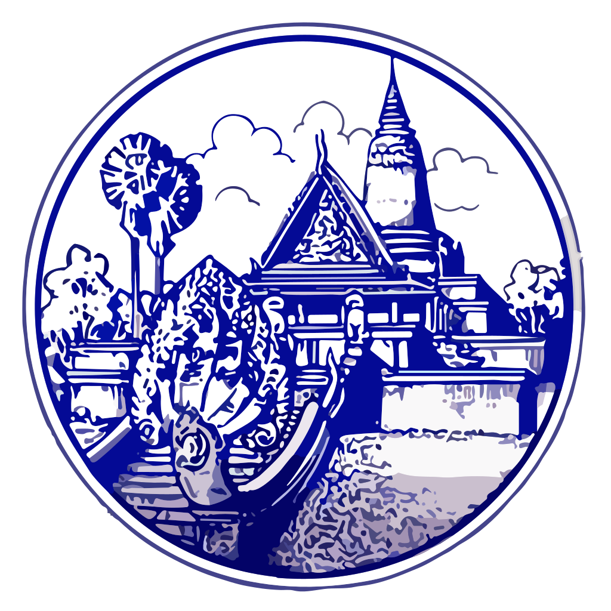

|
• ឈ្មោះផ្លូវកាណ៍ • រកឃើញ • អ្នកបង្កើត • រាជសម័យ • នាមសម្គាល់ហៅ • បោះបង់លើកទី១ • ក្នងរាជ • មូលហេតុ • បង្កើតឡើងវិញ • កាលបរិច្ឆេទ • សម័យកាល • តាងនាមទីក្រុង • ត្រូវបានហៅថា • ការចាប់ផ្តើមឡើងវិញ • មជ្ឈមណ្ឌល • រហស្សនាម • ចំនួនប្រជាជន • កំណើនប្រជាជន • ផ្ទៃក្រឡាទីក្រុង • ផ្ទៃក្រឡាពង្រីកបន្ថែម • អភិបាលក្រុង • រដ្ធបាលក្រុង • ចំនួនខណ្ឌ • ចំនួនសង្កាត់ • កំណើនសេដ្ធកិច្ច • សម័យកាល • ការសម្លាប់ប្រជាជនក្នុងក្រុង • បោះបង់លើកទី២ • និមិត្តសញ្ញាត្រាក្រុង |
: រាជធានីភ្នំពេញ : គ.ស. ១៤០០ : បរមរាជាទី១ ឬ ពញ្ញាយ៉ាត : សម័យចតុមុខ : ក្រុងចតុមុខ : គ.ស. ១៤៦១ : ព្រះស្រីរាជា : ចម្បាំងដុតក្រុងចតុមុខរវាងព្រះស្រីរាជានិស្រីសុរិយោទ័យ : ក្នងរាជ ព្រះនរោត្តម : ១៨៦៥ : កម្ពុជាក្រោមអាណាព្យាបាលបារាំង : យកតាមឈ្មោះ (វត្តភ្នំ) និង លោកយាយ ដូនពេញ : ក្រុងភ្នំពេញ : ១៩៨២ រហូតដល់បច្ចុប្បន្ន : កំណត់ជាទីក្រុងទី១ : ទីក្រុងវប្បធម៍ : 2.3លាននាក់ (2023) : 2.5លាននាក់ (2024) : 679 km² : 919 km² (2024) : លោក ឃ្លង ស្រេង (CPP) : សាលារាជធានីភ្នំពេញ : 14 : 105 : 5.5% (2023) → 6.6 (2024) : កម្ពជាប្រជាធិបតេយ្យ : ប្រមាណ 1.2លាននាក់ : ១៩៧៥  |
| រដ្ឋបាលភ្នំពេញ | ||||
| លេខរៀង | ឈ្មោះ | អង់គ្លេស | សង្កាត់ | ភូមិ |
| 1 | ខណ្ឌចំការមន | Chamkar Mon | 5 | 40 |
| 2 | ខណ្ឌដូនពេញ | Doun Penh | 11 | 134 |
| 3 | ខណ្ឌ៧មករា | Prampir Makara | 8 | 66 |
| 4 | ខណ្ឌទួលគោក | Tuol Kouk | 10 | 143 |
| 5 | ខណ្ឌដង្កោ | Dangkao | 12 | 81 |
| 6 | ខណ្ឌមានជ័យ | Mean Chey | 7 | 59 |
| 7 | ខណ្ឌឫស្សីកែវ | Russey Keo | 7 | 30 |
| 8 | ខណ្ឌសែនសុខ | Sen Sok | 6 | 47 |
| 9 | ខណ្ឌពោធិ៍សែនជ័យ | Pou Senchey | 7 | 75 |
| 10 | ខណ្ឌជ្រោយចង្វារ | Chroy Changvar | 5 | 22 |
| 11 | ខណ្ឌព្រែកព្នៅ | Prek Pnov | 5 | 59 |
| 12 | ខណ្ឌច្បារអំពៅ | Chbar Ampov | 8 | 49 |
| 13 | ខណ្ឌបឹងកេងកង | Boeng Keng Kang | 7 | 55 |
| 14 | ខណ្ឌកំបូល | Kamboul | 7 | 93 |